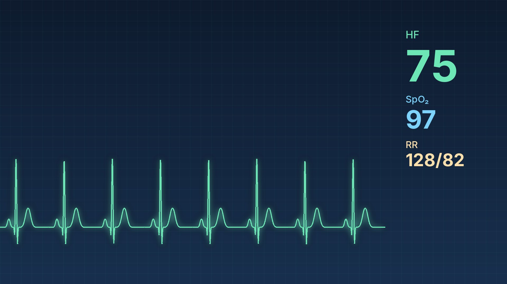
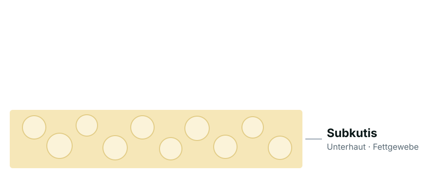
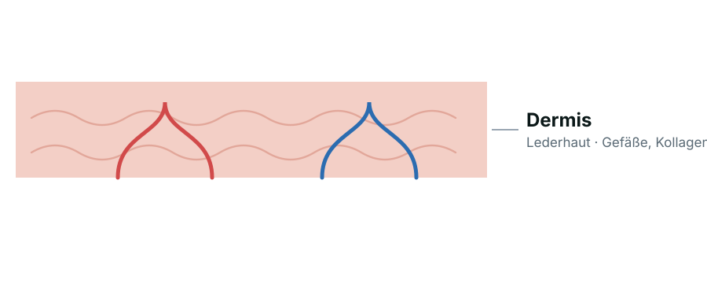
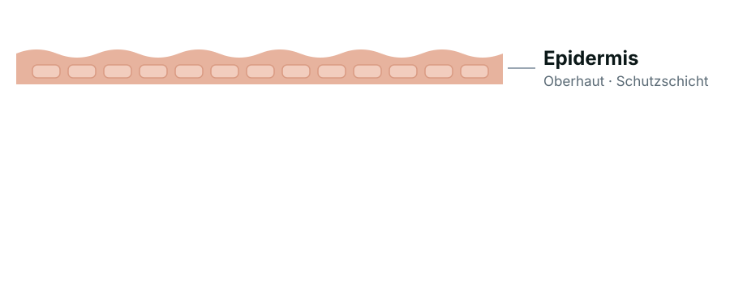

Ein Showcase und eine Nachschlaghilfe.
Florian Loyns
reveal.js ist ein freies Open-Source-Framework (MIT) von Hakim El Hattab und der Community.
<section id="fragments">…</section> <a href="#/fragments">Fragments</a>Die Zahl ist die Foliennummer oben rechts – auch G, Zahl, Enter springt hin. Am Ende: alle Tasten.
Die Hauptlinie ist waagerecht. Wo ein Thema Tiefe hat, hängen Unterfolien darunter – für Beispiele, Herleitungen, Rückfragen.
<section>
<section>Oberfolie</section>
<section>Unterfolie</section>
</section>Du bist hier: oben im Kapitel 3
↓ Drücke die Pfeiltaste nach unten.
Nach oben geht es zurück, nach rechts weiter zum nächsten Kapitel. Die Punkte am rechten Rand zeigen, wie viele Unterfolien es gibt.
Reveal.initialize({ slideNumber: 'h.v' })Du bist hier: Kapitel 3, Unterfolie 2
fragment – erscheint (Standard)fade-up – steigt hereinhighlight-current-blue – hebt in Blau hervorstrike – streicht durch<li class="fragment fade-up">…</li>Probier's: Leertaste oder → · ↓ darunter: mehr Arten und freie Reihenfolge.
growshrinksemi-fade-outhighlight-redhighlight-greencurrent-visible<div class="fragment grow">…</div>data-fragment-index bestimmst du, was wann kommt.Vor der Morgengabe misst Frau H. einen Puls von 48/min. Der Betablocker steht im Plan. Was tun Sie?
Gleicher Index = erscheint gleichzeitig. Hier: erst die Optionen, dann die Lösung, dann fallen die Ablenker weg.
<section data-transition="fade">…</section>Sparsam einsetzen – ein ruhiges fade wirkt in der Lehre meist am besten.
fade
Eine Vollflächen-Farbe hinter der Folie.
data-background-color ↓ darunter: Verlauf, Bild und VideoEin Verlauf statt Vollton.
data-background-gradientEin Bild formatfüllend hinter der Folie.
data-background-imageEin Film läuft hinter der Folie.
data-background-video<video data-autoplay muted loop>
<source data-src="film.mp4" type="video/mp4">
</video>Pausiert beim Folienwechsel von selbst und lädt dank data-src erst bei Bedarf. ↓ darunter: Ton und Webseite.
75 Schläge pro Minute · erster und zweiter Herzton
synthetisch erzeugt, keine Aufnahme
<audio controls> <source data-src="ton.mp3" type="audio/mpeg"> </audio>reveal pausiert den Ton beim Folienwechsel. Das Herz schlägt nur, solange der Ton läuft.
Aus Datenschutzgründen lädt die Karte erst auf Klick. Dabei wird eine Verbindung zu openstreetmap.org hergestellt und deine IP-Adresse an OpenStreetMap übertragen.
<iframe data-src="https://www.openstreetmap.org/export/embed.html?…"></iframe>Datenschutzfreundlich: erst auf Klick geladen (Klick = Einwilligung). Läuft nur online.

Bild großdata-preview-imagedata-preview-video<img src="bild.jpg" data-preview-image>Eingebaut seit reveal.js 5.2 – ohne Plugin. Esc schließt die Vorschau.
Erst messen, dann geben.
<p class="r-fit-text">Erst messen, dann geben.</p>↓ darunter: Bilder Schicht für Schicht stapeln.



<div class="r-stack">
<img src="schicht-1.svg"> <img class="fragment" src="schicht-2.svg"> …
</div>↓ Weiter nach unten – beobachte den Puls.
<section data-auto-animate> … <div data-id="puls"> … </section> (auf beiden Folien)↓ Weiter – die Liste sortiert sich.
↓ Weiter: Werte, die sich verändern.
<div data-id="sys" style="height:228px"> → <div data-id="sys" style="height:169px">↓ Weiter: nach vier Wochen Therapie.
<div data-id="sys" style="height:228px"> → <div data-id="sys" style="height:169px">Gleiche data-id, andere Höhe und Farbe – reveal.js rechnet den Weg dazwischen.
500 ml in 4 Stunden: Tropfen pro Minute
<math><mfrac><mn>500</mn><mn>240</mn></mfrac></math>MathML kann jeder aktuelle Browser – ohne Zusatzbibliothek und ohne fremden Server. Für LaTeX-Schreibweise gibt es das Math-Plugin.
Das Publikum sieht nur die Folie. Jede Folie dieser Präsentation hat Notizen – probier es aus.
<section>
…
<aside class="notes">Das sehe nur ich.</aside>
</section>Folie auf den Beamer, Sprecheransicht auf den Laptop – beide bleiben synchron.
Ideal zum Nacharbeiten auf dem Handy. Fragments erscheinen beim Scrollen. Auf schmalen Bildschirmen schaltet reveal.js sogar von selbst um.
Diese Präsentation zum Durchscrollen öffnenLink mit ?view=scroll · oder Reveal.initialize({ view: 'scroll' })<section data-autoslide="1600"> … </section>
Endlosschleife: Reveal.initialize({ autoSlide: 5000, loop: true })| Taste | Funktion | Wofür |
|---|---|---|
| Esc / O | Übersichtsmodus | Alle Folien als Raster – schnell springen |
| S | Sprecheransicht | Notizen, Uhr und nächste Folie im zweiten Fenster |
| F | Vollbild | Ablenkungsfreie Präsentation |
| Alt+Klick | Zoom | In ein Detail hineinvergrößern |
| G | Gehe zu Folie | Nummer eintippen, Enter – schon da |
| Strg+⇧+F | Suche | Ein Wort in allen Folien finden |
| B / . | Pause (Schwarzbild) | Aufmerksamkeit zurück in den Raum holen |
| ? | Hilfe | Alle Tastenkürzel als Übersicht |
| Druck → PDF | PDF-Export | Handout aus denselben Folien (?print-pdf) |
Zoom, Sprecheransicht und Suche sind mitgelieferte Plugins von reveal.js.
reveal.js ist ein freies Open-Source-Framework (MIT) von Hakim El Hattab und der Community.
revealjs.com
Material für Rückfragen kommt ans Ende und wird nicht mitgezählt. So zeigt die Nummer unten rechts weiter das echte Ende des Vortrags.
<section data-visibility="uncounted">…</section>
<section data-visibility="hidden">…</section> ← ganz ausgeblendet